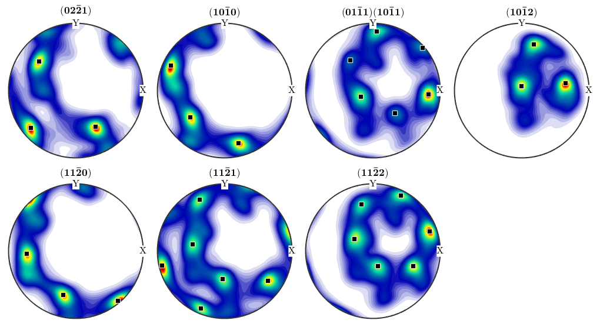
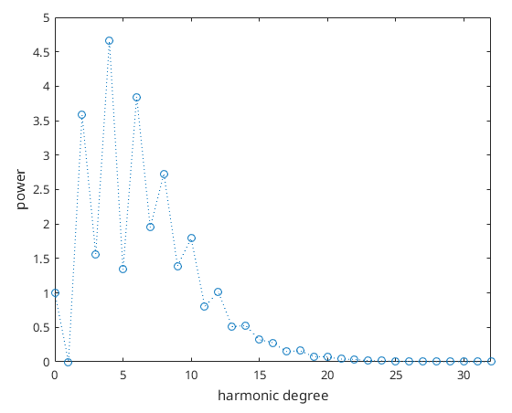

Characterizing ODFs
Explains how to analyze ODFs, i.e. how to compute modal orientations, texture index, volume portions, Fourier coefficients and pole figures.
| On this page ... |
| Modal Orientations |
| Texture Characteristics |
| Volume Portions |
| Fourier Coefficients |
| Pole Figures and Values at Specific Orientations |
| Extract Internal Representation |
Some Sample ODFs
Let us first begin with some constructed ODFs to be analyzed below
A bimodal ODF:
cs = crystalSymmetry('mmm'); odf1 = unimodalODF(orientation('Euler',0,0,0,cs)) + ... unimodalODF(orientation('Euler',30*degree,0,0,cs))
odf1 = ODF
crystal symmetry : mmm
specimen symmetry: 1
Radially symmetric portion:
kernel: de la Vallee Poussin, halfwidth 10°
center: (0°,0°,0°)
weight: 1
Radially symmetric portion:
kernel: de la Vallee Poussin, halfwidth 10°
center: (30°,0°,0°)
weight: 1
A fibre ODF:
odf2 = fibreODF(Miller(0,0,1,cs),xvector)
odf2 = ODF
crystal symmetry : mmm
specimen symmetry: 1
Fibre symmetric portion:
kernel: de la Vallee Poussin, halfwidth 10°
fibre: (001) - 1,0,0
weight: 1
An ODF estimated from diffraction data
mtexdata dubna odf3 = calcODF(pf,'resolution',5*degree,'zero_Range')
applying zero range method to (02-21)...... - reduction: 4581 / 19848
applying zero range method to (10-10)...... - reduction: 2616 / 19848
applying zero range method to (01-11)(10-11)...... - reduction: 2616 / 19848
applying zero range method to (10-12)...... - reduction: 2312 / 19848
applying zero range method to (11-20)...... - reduction: 2222 / 19848
applying zero range method to (11-21)...... - reduction: 2109 / 19848
applying zero range method to (11-22)...... - reduction: 2026 / 19848
initialize solver
start iteration
error: 4.3484E-01 2.2892E-01 1.6573E-01 1.5349E-01 1.4868E-01 1.4612E-01 1.4436E-01 1.4312E-01 1.4211E-01 1.4130E-01 1.4060E-01
Finished PDF-ODF inversion.
error: 1.4060E-01
alpha: 7.7442E+01 7.4101E+00 1.0345E+02 9.4669E+01 5.0735E+01 6.6847E+01 1.4137E+02
odf3 = ODF
crystal symmetry : Quartz (321, X||a*, Y||b, Z||c)
specimen symmetry: 1
Radially symmetric portion:
kernel: de la Vallee Poussin, halfwidth 5°
center: 2026 orientations, resolution: 5°
weight: 1
Modal Orientations
The modal orientation of an ODF is the crystallographic prefered orientation of the texture. It is characterized as the maximum of the ODF. In MTEX it can be computed by the command calcModes
Determine the modalorientation as an orientation:
center = calcModes(odf3)
center = orientation
size: 1 x 1
crystal symmetry : Quartz (321, X||a*, Y||b, Z||c)
specimen symmetry: 1
Bunge Euler angles in degree
phi1 Phi phi2 Inv.
135.938 35.7181 203.179 0
Lets mark this prefered orientation in the pole figures
plotPDF(odf3,h,'antipodal','superposition',c); annotate(center,'marker','s','MarkerFaceColor','black')
Texture Characteristics
Texture characteristics are used for a rough classification of ODF into sharp and weak ones. The two most common texture characteristcs are the entropy and the texture index.
Compute the texture index:
textureindex(odf1)
ans = 72.1701
Compute the entropy:
entropy(odf2)
ans = -2.8402
Volume Portions
Volume portions describes the relative volume of crystals having a certain orientation. The relative volume of crystals having a orientation close to a given orientation is computed by the command volume and the relative volume of crystals having a orientation close to a given fibre is computed by the command fibreVolume
The relative volume in percent of crystals with missorientation maximum 30 degree from the modal orientation:
volume(odf3,calcModes(odf3),30*degree)*100
ans = 59.5860
The relative volume of crystals with missorientation maximum 20 degree from the prefered fibre in percent: TODO
%fibreVolume(odf2,Miller(0,0,1),xvector,20*degree) * 100
Fourier Coefficients
The Fourier coefficients allow for a complete characterization of the ODF. The are of particular importance for the calcuation of mean macroscopic properties e.g. the second order Fourier coefficients characterize thermal expansion, optical refraction index, and electrical conductivity whereas the fourth order Fourier coefficients characterize the elastic properties of the specimen. Moreover, the decay of the Fourier coefficients is directly related to the smoothness of the ODF. The decay of the Fourier coefficients might also hint for the presents of a ghost effect. See ghost effect.
transform into an odf given by Fourier coefficients
fodf = FourierODF(odf3,32)
fodf = ODF
crystal symmetry : Quartz (321, X||a*, Y||b, Z||c)
specimen symmetry: 1
Portion specified by Fourier coefficients:
degree: 32
weight: 1
The Fourier coefficients of order 2:
reshape(fodf.components{1}.f_hat(11:35),5,5)ans = Columns 1 through 4 -0.0000 - 0.0000i -0.0000 + 0.0000i 0.2099 - 0.5496i -0.0000 + 0.0000i 0.0000 + 0.0000i -0.0000 - 0.0000i 2.0170 - 1.0994i -0.0000 - 0.0000i 0.0000 - 0.0000i 0.0000 + 0.0000i 2.5810 - 0.0000i 0.0000 - 0.0000i -0.0000 - 0.0000i -0.0000 + 0.0000i 2.0170 + 1.0994i -0.0000 + 0.0000i -0.0000 + 0.0000i -0.0000 - 0.0000i 0.2099 + 0.5496i -0.0000 - 0.0000i Column 5 -0.0000 - 0.0000i -0.0000 + 0.0000i 0.0000 + 0.0000i 0.0000 - 0.0000i -0.0000 + 0.0000i
The decay of the Fourier coefficients:
close all;
plotFourier(fodf)
Pole Figures and Values at Specific Orientations
Using the command eval any ODF can be evaluated at any (set of) orientation(s).
odf1.eval(orientation('Euler',0*degree,20*degree,30*degree,cs))ans = 24.0869
For a more complex example let us define a fibre and plot the ODF there.
fibre = orientation('fibre',Miller(1,0,0,cs),yvector);
plot(odf2.eval(fibre))
Evaluation of the corresponding pole figure or inverse pole figure is done using the command calcPDF.
odf2.calcPDF(Miller(1,0,0,cs),xvector)
ans = 2.3345e-04
Extract Internal Representation
The internal representation of the ODF can be adressed by the command
properties(odf3.components{1})Properties for class unimodalComponent:
center
psi
weights
CS
SS
The properties in this list can be accessed by
odf3.components{1}.center
odf3.components{1}.psians = SO3Grid symmetry: "321" - "1" grid : 2026 orientations, resolution: 5° ans = deLaValeePoussinKernel bandwidth: 58 halfwidth: 5°
| DocHelp 0.1 beta |